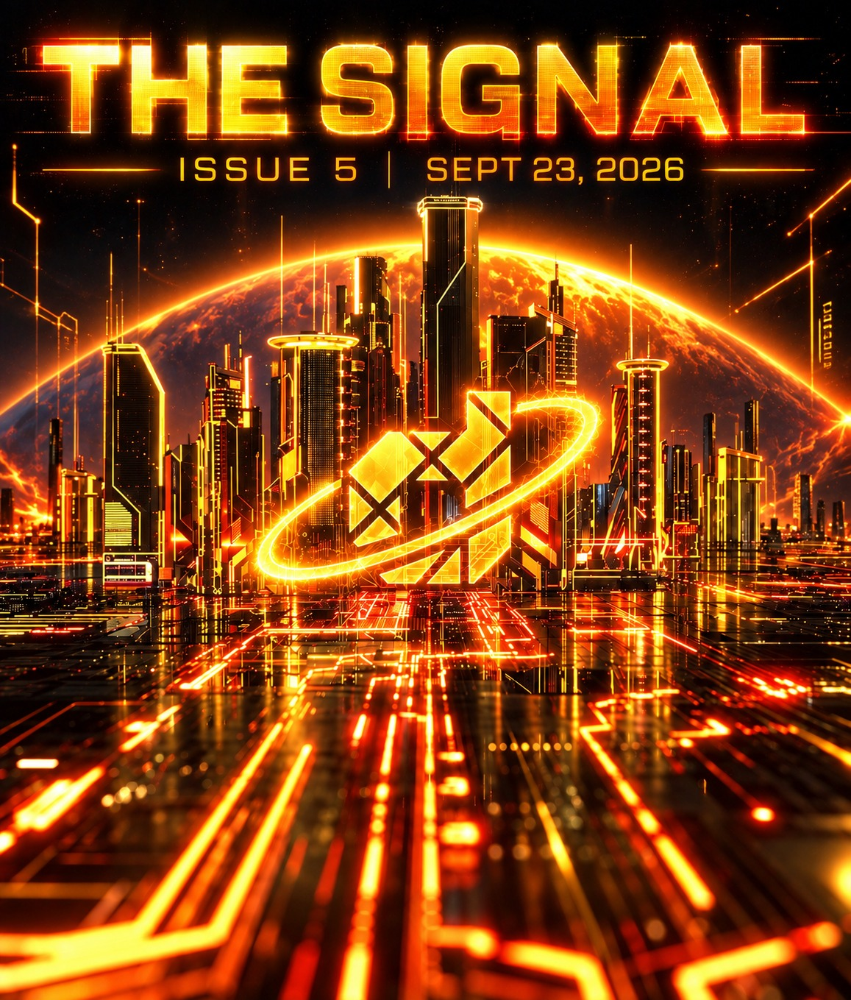
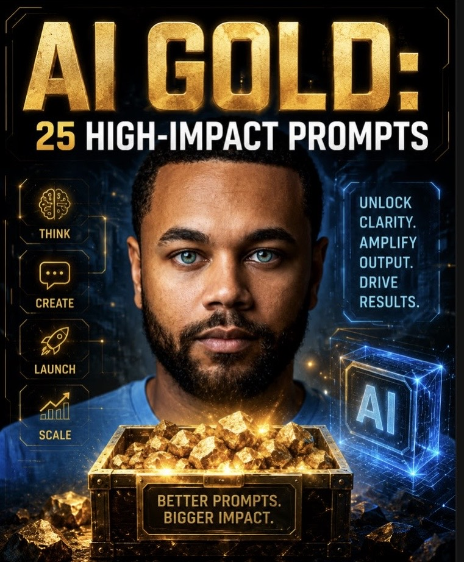
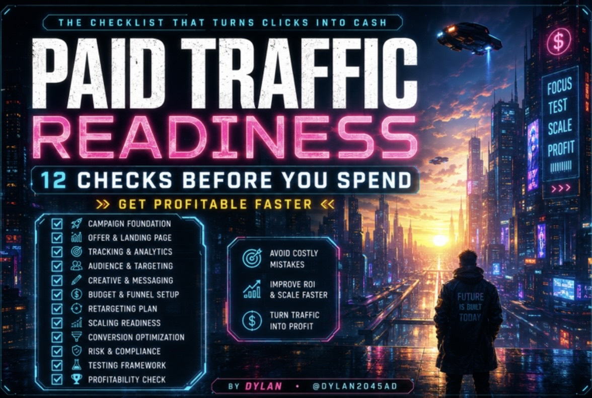

Latest Issue
The Signal — Issue #02
A 5-minute brief on open-source AI, cheaper tokens and the shifts that matter.


A 5-minute brief on open-source AI, cheaper tokens and the shifts that matter.
Create anything. Automate anything. Hack reality. Command AI.
AI Gold Cyberpunk Prompt — Gumroad
25 high-impact AI prompts built to unlock clarity, amplify output and drive results.
AI Gold: 25 High-Impact Prompts — Payhip
12 essential checks to make paid traffic more profitable before you spend.
Paid Traffic Readiness Checklist — Ko-fi